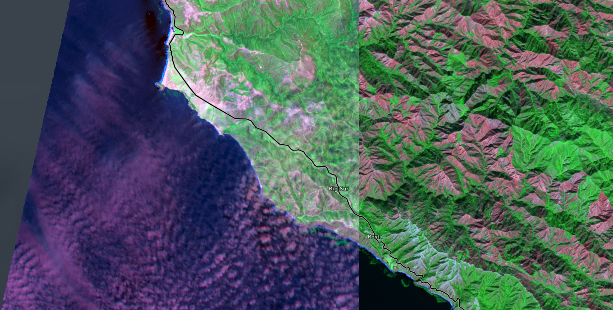
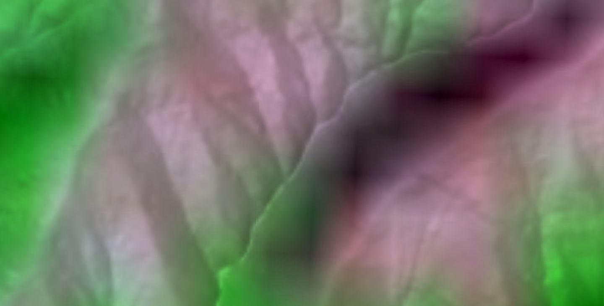
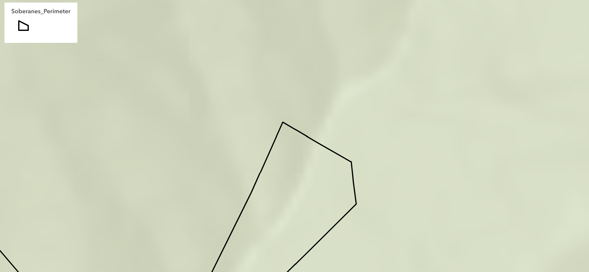
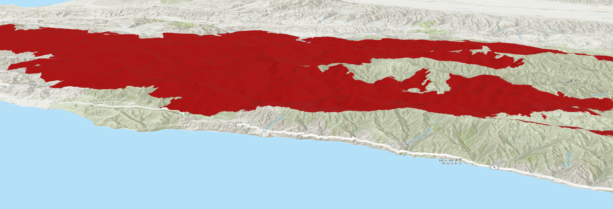

Lab 03 · October 2026
Perimeter, Areas, and Distortions
The question
How much land burned in the Soberanes Fire.
The data
The data was taken from a Esri-hosed teaching web map on the area burned in the Soberanes Fire in California in 2016. The link to this data is https://www.arcgis.com/apps/mapviewer/index.html?layers=82f8ddd0b40b49faa142ced59a569b8d.
This had a listed area of about 823.634 km² and a listed parameter of 556,808km. It is important to note that this is in units governed by WGS 84/Pseudo-Mercator projection, as retrieved from the metadata, and as such is not very accurate from a geodic perspective. This was only stated in the service definition. Furthermore, 686 rings smaller than a single Landsat cell were found on this parameter, which likely distorted the true parameter.. This data was also used to generate an ArcGIS scene in three dimensions for an elevation surface. The second source of data was the Esri Landsat Explorer, found at https://livingatlas.arcgis.com/landsatexplorer/, where I measured on June 20th, 2016 and October 26th, 2016 in short wave IR to see burn scars. Lastly, there are the results from a public geode calculator at https://geographiclib.sourceforge.io/cgi-bin/GeoidEval to measure how different geode versions change the height at specific locations.
The method
The first two measurements were taken directly from the data, namely the 823.634 km² figure in Pseudo-Mercator units and a second from an Arcade expression that extracted geodetic area with AreaGeodetic(), which totaled 533.486 km². I then checked how the area changes with distance from the equator in the Web Mercator projection. This is summarized in a table below. The burn scars were visually examined in the Esri Landsat Explorer, and the spread of geode distances were taken from the SourceForge tool. Furthermore, the true area was estimated by using an ArcGIS scene to get the average slope in two lines across the fire and plugging that into 1/cos(slope) to get an estimate of the true area covered. This is guaranteed to be an underestimate, but it will likely be more accurate than a pure planar projection. Lastly, we filled two sensitivity tables, one with the area distortion from Web Mercator projection using sec²(phi) − 1 and the other with the distortion of bands from cell-size using various sensors.




What I found
Areas measured geodetically on the WGS 84 ellipsoid.
Source geometry stored in EPSG:3857 (Web Mercator);
planar areas in that frame are inflated by sec^2(phi)
and are reported here only for comparison.
The tables below show the data and the methods of retrieval. Note that the planar figure from the Web Mercator has km² as the unit but is measured with a Web Mercator projection that distorts the area, so the units are not entirely compatible. Two sensitivity tables are also provided, one showing distortion of area by latitude in the Web Mercator projection and another showing the distortion of bands from cell-size using various sensors.
At this scale and latitude, the distortion from the Web Mercator projection dominates. If I were publishing this data and had to choose a department, I would publish the geodetic area, as it makes the least assumptions on the changing in slope while accounting for the large amount of distortion caused by the Web Mercator projection. I would not publish parameter values as those depend strongly on the resolution of the sensor and would require caveats.
What this does not show
At this scale and latitude, the distortion from the Web Mercator projection dominates. If I were publishing this data and had to choose a department, I would publish the geodetic area, as it makes the least assumptions on the changing in slope while accounting for the large amount of distortion caused by the Web Mercator projection. I would not publish parameter values as those depend strongly on the resolution of the sensor and would require caveats.
AI use: No AI tools were used for this entry, but Google Docs and https://tabletomarkdown.com was used for the tables above.
Reflection
If I had trusted the attribute table, I would have published the given area figure and been off by about 50% due to Web Mercator Distortion, and probably more given the figure given is in m³ and not km² as I expected, and so I would have been off by several orders of magnitude. However, I would now publish the figure 533.486 km² from the “WGS 84 ellipsoid, geodetic” frame for the total area burned as it seems the most accurate with the least assumptions. I would still check which geode is used beforehand, though.
For this fire, the most important thing was the projection, as it overwhelmed all other sources of distortion. For areas closer to the equator or with much rougher terrain, the grid for measurement and the terrain may have a larger impact on the area and the rankings could flip. Furthermore, the terrain needed to be found from a separate map and could not be given from the Web Mercator Projection.
For disaster declarations, burned acreage changes how much financial and logistical support can be expected from federal organizations like FEMA, with smaller disasters warranting less resources. If the Web Mercator figure was published blindly, then the result could lead to too many resources being allocated to this disaster and causing smaller disasters elsewhere to be undersupported.